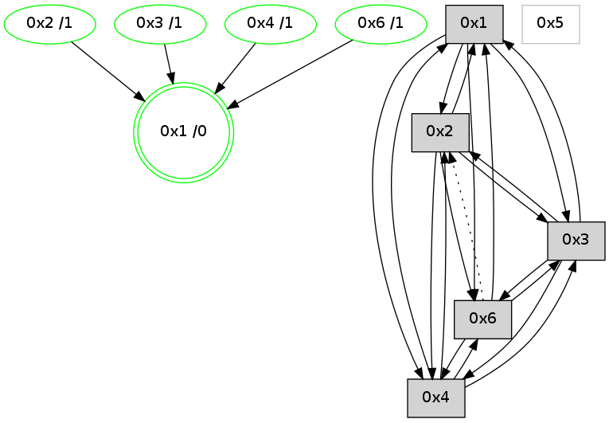

>> << IDX [start] -100 -25 -5 +0 +5 [1235.42203999]
 Previous packets
----------------------------------------------------------------------
1230.399509 beacon01(adaf) #0 coord=01,02,05,03,04,06 cycle=944.0ms assoc
-- color-indic=0 64 46 cd
1230.409470 beacon02(adaf) #0 coord=01,02,05,03,04,06 cycle=944.0ms assoc 64 17 32
1230.419472 beacon05(adaf) #0 coord=01,02,05,03,04,06 cycle=944.0ms assoc 64 b1 18
1230.429470 beacon03(adaf) #0 coord=01,02,05,03,04,06 cycle=944.0ms assoc 64 2d 3c
1230.439471 beacon04(adaf) #0 coord=01,02,05,03,04,06 cycle=944.0ms assoc 64 8b 16
1230.449471 beacon06(adaf) #0 coord=01,02,05,03,04,06 cycle=944.0ms assoc 64 ff 0a
1230.460943 [Hello(1): seq=890 sym=2,4,6,3 color=0 sysInfo=hasWarning,MaxColorIndicationCalled,MaxColorResponseCalled,MaxColorRequestCalled,ColoringModeRequestCalled stat=2:14,3,9,0/4:7,0,5,1/6:8,2,14,1/3:5,0,5,1]
----------------------------------------------------------------------
1231.404016 beacon01(adaf) #0 coord=01,02,05,03,04,06 cycle=944.0ms assoc
-- color-indic=0 64 82 a2
1231.413978 beacon02(adaf) #0 coord=01,02,05,03,04,06 cycle=944.0ms assoc 64 d3 5d
1231.423979 beacon05(adaf) #0 coord=01,02,05,03,04,06 cycle=944.0ms assoc 64 75 77
1231.433980 beacon03(adaf) #0 coord=01,02,05,03,04,06 cycle=944.0ms assoc 64 e9 53
1231.443978 beacon04(adaf) #0 coord=01,02,05,03,04,06 cycle=944.0ms assoc 64 4f 79
1231.453978 beacon06(adaf) #0 coord=01,02,05,03,04,06 cycle=944.0ms assoc 64 3b 65
1231.465699 [Hello(4): seq=986 sym=2,1,3,6 sysInfo=hasWarning stat=2:7,0,1,1/1:13,11,3,0/3:13,0,8,1/6:12,0,5,1]
----------------------------------------------------------------------
1232.408520 beacon01(adaf) #0 coord=01,02,05,03,04,06 cycle=944.0ms assoc
-- color-indic=0 64 ce 12
1232.418480 beacon02(adaf) #0 coord=01,02,05,03,04,06 cycle=944.0ms assoc 64 9f ed
1232.428484 beacon05(adaf) #0 coord=01,02,05,03,04,06 cycle=944.0ms assoc 64 39 c7
1232.438482 beacon03(adaf) #0 coord=01,02,05,03,04,06 cycle=944.0ms assoc 64 a5 e3
1232.448483 beacon04(adaf) #0 coord=01,02,05,03,04,06 cycle=944.0ms assoc 64 03 c9
1232.458482 beacon06(adaf) #0 coord=01,02,05,03,04,06 cycle=944.0ms assoc 64 77 d5
1232.470211 [Hello(2): seq=1475 sym=3,6,1,4 color=13 sysInfo=hasWarning,MaxColorIndicationCalled,ColoringModeIndicationCalled,MaxColorResponseCalled stat=3:7,0,4,1/6:2,0,1,1/1:3,7,2,0/4:9,0,6,1]
1232.472310 [Hello(1): seq=891 sym=2,4,6,3 color=0 sysInfo=hasWarning,MaxColorIndicationCalled,MaxColorResponseCalled,MaxColorRequestCalled,ColoringModeRequestCalled stat=2:15,3,9,0/4:7,0,5,1/6:9,2,14,1/3:5,0,5,1]
----------------------------------------------------------------------
1233.413030 beacon01(adaf) #0 coord=01,02,05,03,04,06 cycle=944.0ms assoc
-- color-indic=0 64 0a 7d
1233.422990 beacon02(adaf) #0 coord=01,02,05,03,04,06 cycle=944.0ms assoc 64 5b 82
1233.432991 beacon05(adaf) #0 coord=01,02,05,03,04,06 cycle=944.0ms assoc 64 fd a8
1233.442991 beacon03(adaf) #0 coord=01,02,05,03,04,06 cycle=944.0ms assoc 64 61 8c
1233.452992 beacon04(adaf) #0 coord=01,02,05,03,04,06 cycle=944.0ms assoc 64 c7 a6
1233.462993 beacon06(adaf) #0 coord=01,02,05,03,04,06 cycle=944.0ms assoc 64 b3 ba
1233.474716 [Hello(4): seq=987 sym=2,1,3,6 sysInfo=hasWarning stat=2:7,0,1,1/1:14,11,3,0/3:14,0,8,1/6:12,0,5,1]
1233.483564 [STC(1) #0.221 new-neigh,tree-change,inconsistent-stability,stable,to-color d=0]
----------------------------------------------------------------------
1234.417535 beacon01(adaf) #0 coord=01,02,05,03,04,06 cycle=944.0ms assoc
-- color-indic=0 64 84 68
1234.427496 beacon02(adaf) #0 coord=01,02,05,03,04,06 cycle=944.0ms assoc 64 d5 97
1234.437496 beacon05(adaf) #0 coord=01,02,05,03,04,06 cycle=944.0ms assoc 64 73 bd
1234.447496 beacon03(adaf) #0 coord=01,02,05,03,04,06 cycle=944.0ms assoc 64 ef 99
1234.457498 beacon04(adaf) #0 coord=01,02,05,03,04,06 cycle=944.0ms assoc 64 49 b3
1234.467497 beacon06(adaf) #0 coord=01,02,05,03,04,06 cycle=944.0ms assoc 64 3d af
1234.479035 [STC(4)->1 #0.221 new-neigh,tree-change,inconsistent-stability,stable,to-color d=1]
1234.482296 [Hello(1): seq=892 sym=2,4,6,3 color=0 sysInfo=hasWarning,MaxColorIndicationCalled,MaxColorResponseCalled,MaxColorRequestCalled,ColoringModeRequestCalled stat=2:15,3,9,0/4:7,0,5,1/6:9,2,14,1/3:5,0,5,1]
1234.484815 [Hello(2): seq=1476 sym=3,6,1,4 color=13 sysInfo=hasWarning,MaxColorIndicationCalled,ColoringModeIndicationCalled,MaxColorResponseCalled stat=3:7,0,4,1/6:3,0,1,1/1:4,7,3,0/4:9,0,6,1]
1234.487817 [STC(3)->1 #0.221 new-neigh,tree-change,inconsistent-stability,stable,to-color d=1]
1234.497170 [STC(2)->1 #0.221 new-neigh,tree-change,inconsistent-stability,stable,to-color d=1]